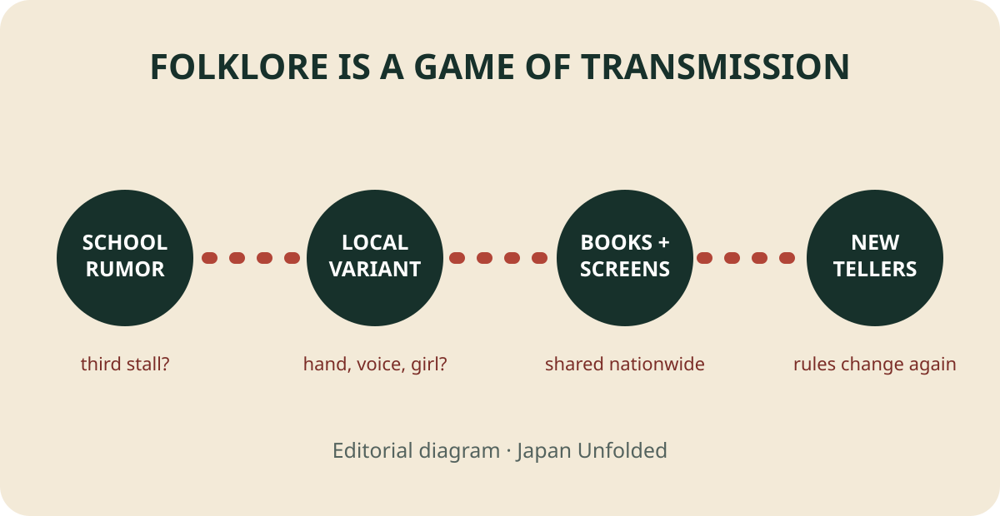

Japan with
Japan with

A Japanese elementary school is almost empty after class. Fluorescent lights hum above polished corridors. At the girls’ restroom, a child walks to the third stall, knocks three times and calls: Hanako-san, Hanako-san, are you there? In the best-known version, a small voice answers, “Yes.” What happens next depends entirely on who tells the story.
Sometimes a hand appears. Sometimes the door opens onto a girl with a bob haircut and a red skirt. In gentler tellings, she only answers or wants to play. Even the floor, stall and words can change. That instability is not a flaw in the legend. It is the mechanism that made Hanako-san one of Japan’s most durable school ghosts.
There is no verified “real Hanako”
Online retellings often give Hanako-san a tragic biography: killed in an air raid, murdered by a stranger, abused at home or driven to suicide by bullying. These may feel like explanations, but no reliable historical record identifies one child as the source. Folklore does not require a single original incident. A powerful rumor can collect new causes after it spreads.
One of the oldest often-cited records comes from around 1948 in Kuro-sawajiri, Iwate Prefecture. Pupils reportedly avoided the third toilet in a restroom behind a gymnasium. Calling to “Hanako-san of the third” brought a large white hand from below. Notice what is missing: the standard red skirt, a detailed death story and even the exact modern dialogue. The early fragment contains the powerful pieces—school, toilet, third place, name, forbidden call—but not a finished character sheet.
Why a toilet—and why the third stall?
Schools are fertile settings for rumor. Children occupy the same building, repeat the same routes and pass knowledge laterally without adults controlling every conversation. A music room, staircase or restroom can acquire its own rule: play a piano at midnight, count a forbidden step, open a particular door. Architecture turns vague fear into a test anyone can describe.
The restroom intensifies that design. It is public and private at once: shared by a group, yet divided into locked spaces where a child is briefly alone. Older Japanese toilet folklore also imagined hands or beings emerging from the hole below. Hanako-san did not invent the toilet as a supernatural threshold; she gave a modern school generation a name and a repeatable ritual.
Three is useful because it is easy to remember, easy to perform and visibly embedded in a row of doors. In different accounts, however, the exact location shifts. The important thing is less a sacred national number than a precise instruction that lets children test courage together.

The answer: Hanako-san is a game children can edit
Here is the revelation behind the third door. Hanako-san survived not because every child heard exactly the same tale, but because the story offers a compact piece of playable code: a location, a number, a name, a sequence and a possible reply. One school can substitute the fourth stall. Another can add a hand. A teller can make Hanako friendly, lethal or lonely. The audience becomes performer, witness and next author.
Research on Japanese school legends documents this local abundance. A 1995 National Museum of Ethnology study lists a Himeji elementary school’s “seven wonders”: colored hands, a shining toilet, dangerous stair counts and Hanako-san in the third cubicle. The list shows an ecology rather than a single franchise. Each rumor maps anxiety onto a corner of the building children know intimately.
These legends are often grouped overseas as “Japanese ghosts,” but they are not interchangeable. Yūrei usually means a human spirit; yōkai covers a broad range of uncanny beings and phenomena; toshi densetsu, urban legend, describes modern rumor-like narratives. Hanako-san slides between labels depending on the teller and adaptation.
From whispered challenge to 1990s star
School supernatural stories are older than the 1990s, and Hanako-like material was collected decades earlier. What changed was scale. Children’s publications, books and television circulated local rumors beyond a single playground. Folklorist Toru Tsunemitsu’s fieldwork-based School Ghost Stories appeared in 1990. By the middle of the decade, films titled Toire no Hanako-san and Gakkō no Kaidan helped turn school horror into mass entertainment.
Media did not replace oral tradition. It fed recognizable images back into it. A child might learn the three-knock version from a book, modify it at school, then meet a different Hanako in a film or manga. Games, anime and social media continue that loop. A fictional “Hanako” may even be male or heroic. Those are adaptations, not proof of what the folk legend originally was.
What the legend reveals
It is tempting to make Hanako-san symbolize one thing: war trauma, bullying, menstruation, old toilets or fear of growing up. Any may illuminate a particular version, but none explains every telling. The stronger observation is structural. The story gives children controlled access to fear. They choose whether to knock, know the sequence, and can keep friends nearby. The building that imposes adult schedules becomes, for a moment, a map owned by children.
That does not make every telling harmless. Bathroom rumors can frighten younger pupils, stigmatize a real location or become tools for bullying. Stories of suicide and abuse should not be presented as entertainment about an identifiable child. Visitors should never enter a school, trespass in an abandoned building or film people in a restroom to “hunt” Hanako-san.
How to meet Japan’s ghosts respectfully
The best encounter is through folklore scholarship, museums, books and licensed adaptations—not by turning a working school into a paranormal attraction. When reading a version, ask four questions: Who recorded it? Where and when? Which details were actually in that record? Which were added later? That method keeps a delicious story mysterious without turning invention into history.
Japanese terms such as kaidan (strange or ghostly tale), yūrei and yōkai open different doors into the culture. Practice them with Japanese Training Lab, free with no signup required. For Japan’s real public streets and everyday atmosphere, watch Yuji’s TikTok LIVE walks; DraMap, created by Yuji, lets iPhone users learn Japanese while playing.
Reporting sources
- National Museum of Ethnology: “A Study of Girl Psychics” (1995) — documented school “seven wonders.”
- Osaka Shoin repository: “Morphology of School Ghost Stories” — genre history and the c. 1948 account.
- Kadokawa: Toru Tsunemitsu, School Ghost Stories — publisher record and fieldwork context.
- CiNii Research: toilet apparitions in school ghost stories.
- Japan Toilet Labo: toilet apparitions and folklore.
- Yomitai interview with folklorist Ryohei Hirota and Yuki Yoshida — media circulation.
Sources were checked November 4, 2026. Origin claims remain debated; uncertain biographies are identified as later variants rather than fact. Story selection and interpretation are Japan Unfolded’s editorial judgment.

See the everyday Japan behind the legend.
Yuji edits Japan Unfolded and created DraMap. Walk real streets on TikTok LIVE, then learn Japanese while playing on iPhone.
Japan Unfolded is independently edited by Yuji Shimizu, creator of DraMap. The app link is publisher promotion; editorial claims are sourced above.